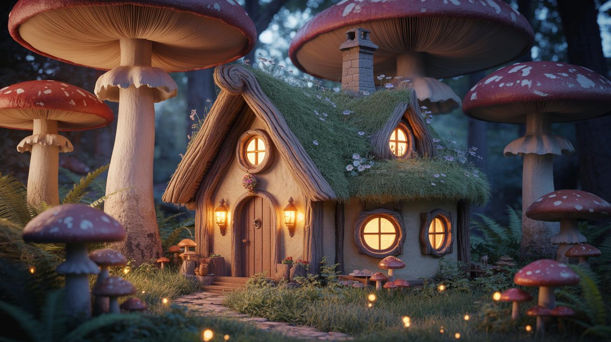
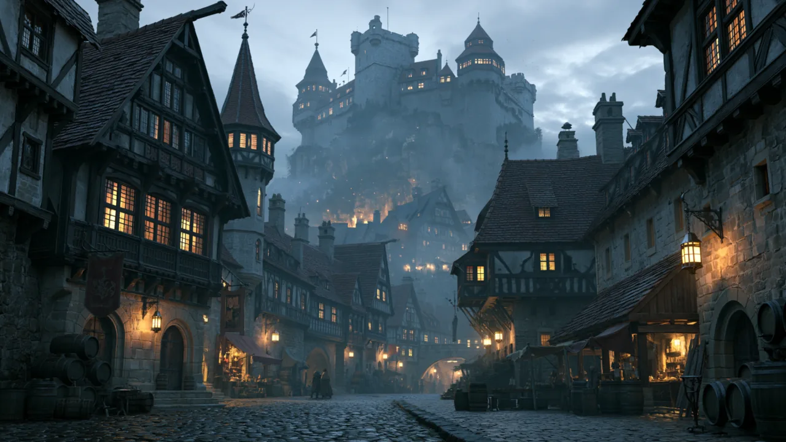
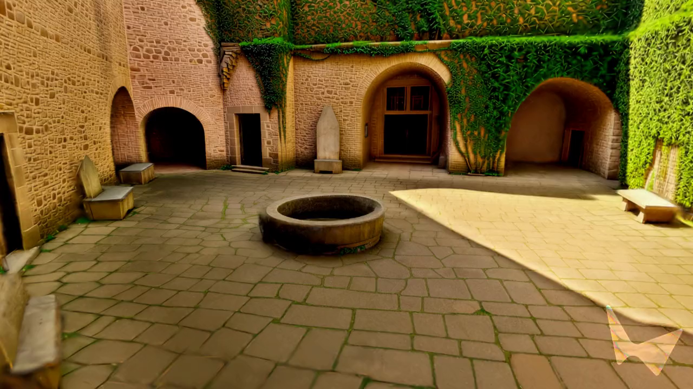

UniWorld-View: Large-Baseline View Synthesis via Video Diffusion Models
Peking University · Rabbitpre AI
Overview
Turn a monocular input into an immersive, controllable world.
UniWorld-View generates photorealistic novel views from a single image or video, even when the target camera moves far beyond the original observation.
It couples occlusion-aware 3D point-cloud guidance with video diffusion to preserve scene appearance, geometry, and temporal consistency across wide-baseline camera trajectories.
Precise camera control3D & 4D view synthesisGeometry-aware video generation
Qualitative Results
3D NVS








4D NVS
4D Scene Generation
BibTeX
@misc{zhou2026uniworldviewlargebaselineviewsynthesis,
title={UniWorld-View: Large-Baseline View Synthesis via Video Diffusion Models},
author={Haiyang Zhou and Wangbo Yu and Chaoran Feng and Xunyu Zhou and Yonghong Tian and Li Yuan},
year={2026},
eprint={2608.04701},
archivePrefix={arXiv},
primaryClass={cs.CV},
url={https://arxiv.org/abs/2608.04701},
}